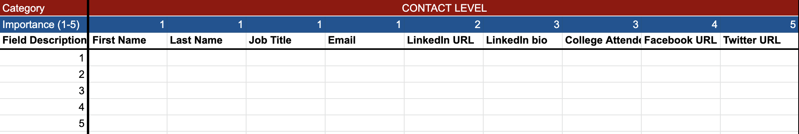
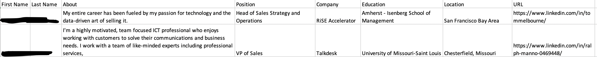

Autobound
Data Science InternTime - 12 Weeks
Tools - Python, Selenium, AWS, JavaScript, HTML, CSS
Team - Daniel Wiener, Kyle Schuster - Autbound Founders
Time - 12 Weeks
Tools - Python, Selenium, AWS, JavaScript, HTML, CSS
Team - Daniel Wiener, Kyle Schuster - Autbound Founders
Going further, below are the different fields that we were interested in collecting ranked on importance. Additionally, it is important to differentiate company versus client data as these require different sources of scraping. Using LinkedIn, we can scrape individuals data fairly easily, however we must use a different site to scrape company data.
To get this data, I scraped mainly LinkedIn profiles based on different filters. On execution, the user can input filters to search for on LinkedIn
To get the company wide data, I scraped mainly Indeed for job postings. I then took these job postings and navigated to the companies Indeed page. From there I was able to scrape the data needed for the company.
Over the next 4 weeks, I researched and planned the best way to go about doing this project. I began by finding the best webscraping tools that are used with Python. The two main elements I was looking for in a webscraping tool were:
The three tools I brought it down to were BeautifulSoup, Selenium, and Scrapy. However, I chose to use Selenium as it allows for very easy website navigation since it was originally built as a website tester. Additionally, it has since been morphed into a webscraper that allows for parsing of data from the JavaScript DOM. Perfect. (I used BeautifulSoup later on in a few places as it pulls data very easily as well).


I also integrated the final program into the NewsAPI software through Jupyter Notebooks. The NewsAPI software allows me to group and categorize companies based on the most relevant news stories at the time. This gave us a deeper look at what is going on at the company that each client works at.
The final project turned out great! I was able to scrape over 500 individual users from LinkedIn on each execution. Each time it took about 15-20 minutes to scrape all of this public data. Addtionally, the program can be automated to continue running at a certain time each day using AWS Cloud software. I uploaded the project to the cloud so that the Autobound team can continue to use it after my internship completed. Below I attached some photos of the final CSV's obtained as well as the project in action!

Results of the scraper
Filter Option
Overall, this was a very successful project. I learned a ton about how to scrape the web as well Python, Selenium, HTML, CSS, and JavaScript. Before doing this project, my knowledge of HTML and CSS was minimal, but it required me to learn these softwares to understand the contents of a webpage. I now am able to scrape nearly any website and create my own websites as seen through this portfolio site! Thank you for reading about my project.